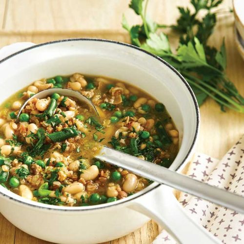

SOUPS

Spelt, White Bean and Pancetta Soup
Spelt is an ancient variety of wheat with a delicious nutty taste and slightly chewy texture. It is gentler on digestion than regular wheat, with more protein and fats than common wheat.
Serves: 4
Time to make: 1Hr 5 mins
Hands-on time: 20 mins
Nutrition Info (per serve)
Calories : 336cal
Kilojoules : 1403kJ
Protein : 23.7g
Total fat : 8.7g
Saturated fat : 2.5g
Carbohydrates : 33.4g
Sugars : 7.6g
Dietary fibre : 12.3g
Sodium : 699mg
Calcium : 97mg
Iron : 4.2mg
Ingredients
2 teaspoons olive oil
1 medium brown onion, finely chopped
2 celery stalks, finely chopped
4oz pancetta, fat trimmed, roughly chopped
2 cloves garlic, chopped
½ cup wholegrain spelt
4 cups reduced-salt chicken stock
14oz can cannellini beans, rinsed, drained
7oz green beans, sliced
1 cup frozen baby peas
2 tablespoons chopped fresh flat-leaf parsley
1 teaspoon lemon zest
Instructions
1. Heat the olive oil in a large saucepan over medium heat. Cook the onion, celery and the pancetta, stirring, for 5 minutes, or until light golden. Add garlic and cook, stirring, for 1 minute, or until fragrant.
2. Add spelt, stock and 1 cup of water to pan. Bring to the boil, then reduce heat to low and simmer, partially covered, for 40 minutes, or until al dente.
3. Add cannellini beans, green beans and the peas; simmer for 5 minutes, or until vegies are just tender. Season with cracked black pepper.
4. Serve the soup sprinkled with parsley and lemon zest.